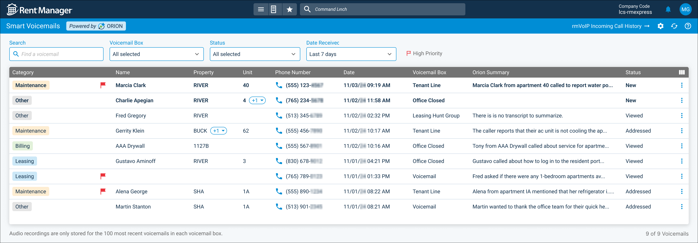
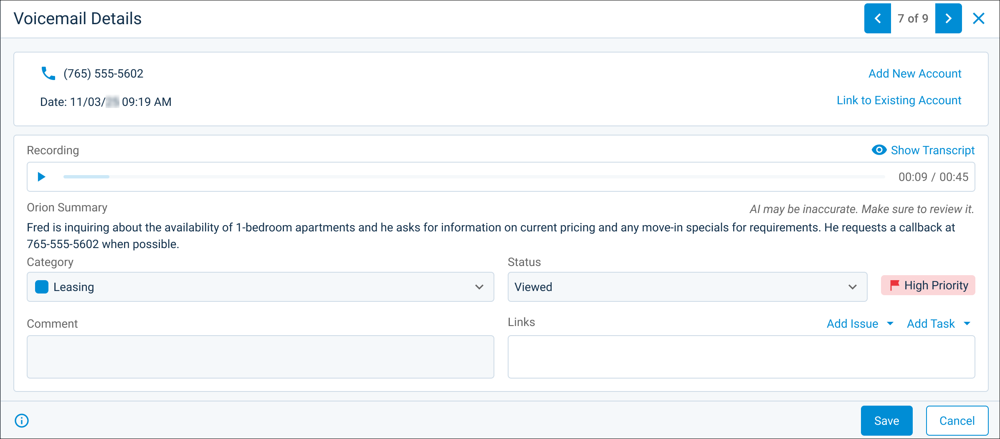

Source: https://rmxhelp.rentmanager.com/Topics/Express/KB/Orion-Smart-Voicemails.htm
Smart Voicemails Powered by Orion AI
The Smart Voicemails feature—powered by Orion AI—automatically categorizes and transcribes voicemails for calls using the rmVoIP phone service. The Smart Voicemails feature displays, categorizes, and transcribes all voicemails to streamline communication review and prioritization to save users valuable time and allow for immediate follow-up action. This feature improves your business's efficiency by providing a faster, more efficient way to manage daily communications.
More Information
This feature is licensed and must be purchased separately. For more information, contact your sales representative at sales@rentmanager.com.
Set Up Smart Voicemails
Once the license for the Smart Voicemails feature is purchased, you can set up this feature by creating new Smart Voicemail boxes and/or upgrading existing rmVoIP voicemail boxes. For more information, refer to Set Up Smart Voicemails.
Manage Smart Voicemails
Once your Smart Voicemail boxes are set up, all voicemails display on the Smart Voicemails page. From this page, you can access each voicemail's details page, where you can listen to the voicemail, recategorize it, or read its full transcript.
Related Preferences
You can determine whether pop-up notifications display in Express when you receive a call or Smart Voicemail through rmVoIP in your personal preferences. For more information, refer to rmVoIP Preferences (Personal Preferences).
Smart Voicemails Page

To view and manage all your Smart Voicemails, go to  arrow_forward Communication arrow_forward Texting/Phone arrow_forward Smart Voicemails.
arrow_forward Communication arrow_forward Texting/Phone arrow_forward Smart Voicemails.
The Smart Voicemails page lists voicemails based on the selected Voicemail Box, Status, and Date Received. Once a voicemail is recorded, the caller's Name, Phone Number, Category, Orion Summary, and additional call information are displayed in the list. For more information on this page, refer to Orion Smart Voicemails (Page).
Smart Voicemail Details Pop-Up

You can view a voicemail's details pop-up from the Smart Voicemails page by clicking  arrow_forward Details. Upon opening the Voicemail Details pop-up, you can listen to the voicemail recording, link the call to an existing account in Rent Manager or to a new account you create, create an task or issue to associate with the voicemail, have Orion AI create a full transcript of the recording by selecting Show Transcript, or edit the call's information. For more information, refer to Orion Smart Voicemail Details (Pop-Up).
arrow_forward Details. Upon opening the Voicemail Details pop-up, you can listen to the voicemail recording, link the call to an existing account in Rent Manager or to a new account you create, create an task or issue to associate with the voicemail, have Orion AI create a full transcript of the recording by selecting Show Transcript, or edit the call's information. For more information, refer to Orion Smart Voicemail Details (Pop-Up).
Manage Smart Voicemail Boxes
You can add more Smart Voicemail boxes as needed or upgrade existing rmVoIP voicemail boxes. To edit your Smart Voicemail boxes, go to  arrow_forward Communication arrow_forward
arrow_forward Communication arrow_forward  Communication Setup arrow_forward Manage Voicemail Boxes.
Communication Setup arrow_forward Manage Voicemail Boxes.
To add a new Smart Voicemail box, click Add Voicemail Box. To upgrade an existing rmVoIP voicemail box, select  arrow_forward Upgrade Existing Voicemail Boxes. For either action, you must log in with your NDT Portal credentials. For more information, refer to Manage Orion Smart Voicemail Boxes.
arrow_forward Upgrade Existing Voicemail Boxes. For either action, you must log in with your NDT Portal credentials. For more information, refer to Manage Orion Smart Voicemail Boxes.